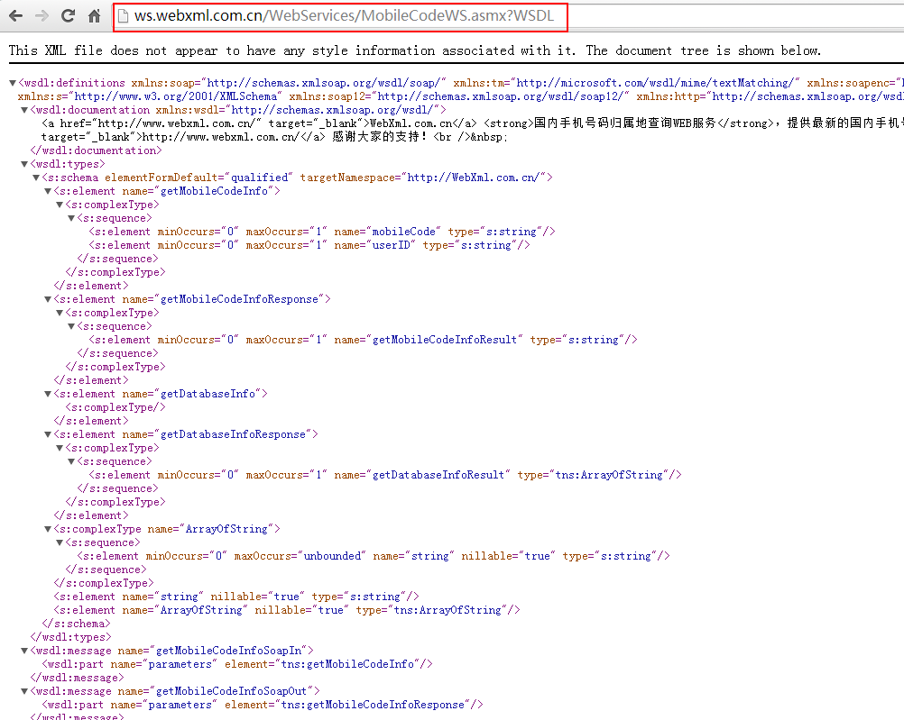
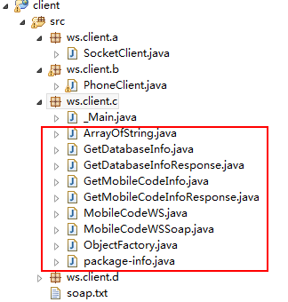

1.webservice是啥
准确的来说，webservice不是一种技术，而是一种规范。是一种跨平台，跨语言的规范，用于不同平台，不同语言开发的应用之间的交互。
举个例子，比如在WindowsServer服务器上有个C#.Net开发的应用A，在Linux上有个Java语言开发的应用B，现在B应用要调用A应用，或者是互相调用，用于查看对方的业务数据，就需要webservice的规范。
再举个例子，天气预报接口。无数的应用需要获取天气预报信息，这些应用可能是各种平台，各种技术实现，而气象局的项目，估计也就一两种，要对外提供天气预报信息，这个时候，如何解决呢？webservice就是出于以上类似需求而定义出来的规范。
我们一般就是在具体平台开发webservice接口，以及调用webservice接口，每种开发语言都有自己的webservice实现框架。比如Java 就有 Apache Axis1、Apache Axis2、Codehaus XFire、Apache CXF、Apache Wink、Jboss RESTEasyd等等。其中Apache CXF用的比较多，它也可以和Spring整合。
3.调用已发布的webservice
3.1 get请求方式
3.2 post请求方式
3.3 SOAP方式请求
3.4 使用wsimport
每个ws都会有一个WSDL，WSDL即WebService Description Language – Web服务描述语言。它是通过XML形式说明服务在什么地方－地址。通过XML形式说明服务提供什么样的方法 – 如何调用。我们可以通过这个WSDL来获取和这个ws有关的信息，包括class和java代码。关于这个WSDL后面我再具体分析，这一节先来看一下如何使用。
wsimport是一个命令，jdk1.6及以上才可以使用，ws针对不同的语言都会有个wsimport命令，我们可以在自己安装的jdk的bin目录下找到这个wsimport.exe，正因为有了这个，所以我们可以在命令行中使用wsimport命令。怎么使用呢？
每个ws都会有一个WSDL，就拿上面的归属地查询服务来说，上面第二张图上面有个服务说明，点开就可以看到WSDL，当然也可以直接访问浏览器上的url来访问这个WSDL，即xml文档。如下：

目前只需要复制一下那个url即可，然后打开命令提示符窗口，随便进入一个目录下（该目录要保存等会生成的和ws相关的文件，自己事先建一个即可），运行：
wsimport http://ws.webxml.com.cn/WebServices/MobileCodeWS.asmx?WSDL
就会生成相应的javabean，当然了，是.class文件，但是我们不想要class文件，我们想要java文件，所以可以使用如下命令：
wsimport -s http://ws.webxml.com.cn/WebServices/MobileCodeWS.asmx?WSDL
这样不仅生成了class文件，还生成了java文件，如果我们想要在固定的包下生成这些文件，等会方便直接拷贝到项目里，可以使用下面的命令：
wsimport -s . -p ws.client.c http://ws.webxml.com.cn/WebServices/MobileCodeWS.asmx?WSDL
这样就会在目录ws/client/c/下生成所需要的class和java代码，然后我们删掉class文件，直接拷贝ws目录到工程中即可，如下(_Main是我自己写的，用来调用使用的)：

这样就有了号码归属地查询这个ws服务相关的API了，这是通过官方的WSDL来生成的，然后我们如何在自己的项目中使用呢？我新写一个_Main.java文件，直接使用这些API即可，如下：1
2
3
4
5
6
7
8
9
10public class _Main {
public static void main(String[] args) {
// 获取一个ws服务
MobileCodeWS ws = new MobileCodeWS();
// 获取具体的服务类型：get post soap1.1 soap1.2
MobileCodeWSSoap wsSoap = ws.getMobileCodeWSSoap();
String address = wsSoap.getMobileCodeInfo("18312345678", null);
System.out.println("手机归属地信息为：" + address);
}
}
这样就很方便了，现在已经完全没有了上面那种连接啊，设置地址啊等等，直接封装好了，我直接调用这些API即可调用远程的webservice。这也是官方推荐的一种方法，当然我们也可以将生成的class文件打包成jar放到工程中。运行一下这个main方法后，也直接返回归属地，没有那些标签的东西了，这才是开发中所需要的东西。
到这里基本已经会调用webservice了，最后再简单总结一下，ws中这个WSDL很重要，这里面用xml描述了该ws的信息，所以我们可以通过解析WSDL来获取该ws相关的API，然后在自己的项目中调用这些API即可调用该ws。
————————————————
版权声明：本文为CSDN博主「eson_15」的原创文章，遵循 CC 4.0 BY-SA 版权协议，转载请附上原文出处链接及本声明。
原文链接：https://blog.csdn.net/eson_15/article/details/52021319